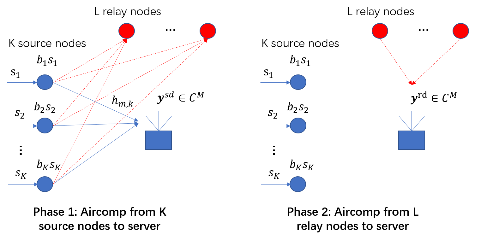

|
Research
Current
Cooperative Diversity in Over-the-Air Computation

Machine learning applications at wireless edge involve collecting
massive data from edge devices, which can be very costly.
To tackle this challenge,
over-the-air computation (AirComp) is a promising solution where many devices transmit
their message simultaneously to achieve ultra-fast aggregation. However, channel fading
can severely impair its performance.
In this project, we incorporate cooperative diversity techniques into AirComp.
We investigate the power control at source nodes and relay schemes at relay nodes respectively.
Future work focuses on in-depth analysis of the outage behaviors using random matrix theory.
Main references:
J. N. Laneman, D. N. Tse, and G. W. Wornell,
“Cooperative diversity in wireless networks: Efficient protocols and outage behavior,”
IEEE Transactions on Information theory, vol. 50, no. 12, pp. 3062-3080, 2004.
G. Zhu and K. Huang,
“MIMO Over-the-Air Computation for High-Mobility Multimodal Sensing,”
IEEE Internet of Things Journal, vol. 6, no. 4, pp. 6089-6103, Aug. 2019.
X. Cao, G. Zhu, J. Xu, and K. Huang,
“Optimal Power Control for Over-the-Air Computation in Fading Channels,”
arXiv e-prints. Online.
Reliable Communication in mmWave Vehicular Network Using Deep Learning
The mmWave wireless systems face two main challenges:
first, mmWave signals are highly sensitive to blockages, which affects the system reliability especially in
a dynamic environment;
Second, the narrow beam and large antenna arrays can introduce critical beam training overhead.
In prior work, a solution based on recurrent neural network is proposed to predict blockage/handoff from previous beam
sequences. Also, some authors address the beam selection problem by using machine learning tools with situational
awareness.
Main References:
A. Klautau, P. Batista, N. González-Prelcic, Y. Wang and R. W. Heath,
“5G MIMO Data for Machine Learning: Application to Beam-Selection Using Deep Learning,”
2018 Information Theory and Applications Workshop (ITA), San Diego, CA, 2018, pp. 1-9.
A. Alkhateeb, I. Beltagy and S. Alex,
“Machine Learning for Reliable mmWave Systems: Blockage Prediction and Proactive Handoff,”
2018 IEEE Global Conference on Signal and Information Processing (GlobalSIP), Anaheim, CA, USA, 2018, pp. 1055-1059.
Y. Wang, A. Klautau, M. Ribero, A. C. K. Soong and R. W. Heath,
“MmWave Vehicular Beam Selection With Situational Awareness Using Machine Learning,”
in IEEE Access, vol. 7, pp. 87479-87493, 2019.
Past
Spectral Algorithms in Stochastic Block Model
Soft Decoding of BCH Codes
BCH codes form a powerful class of error-correcting codes that have been widely
used in communication and data storage systems. Traditionally, they are effectively decoded with
hard-decision decoding algorithms like Berlekamp-Massey algorithm. However,
these hard-decision decoders fail to exploit soft information available, limiting their error performance.
We explore a recently proposed coding scheme that performs iterative soft decoding of binary BCH codes,
where a collection of codewords are transformed into a non-binary LDPC codeword.
We reproduce the simulation results, and give some interpretations from the perspective of minimum
distance.
Main References:
S. Lin, K. Abdel-Ghaffar, J. Li and K. Liu,
“A Novel Coding Scheme for Encoding and Iterative Soft-Decision Decoding of Binary BCH Codes of Prime Lengths,”
2018 Information Theory and Applications Workshop (ITA), San Diego, CA, 2018, pp. 1-10.
|